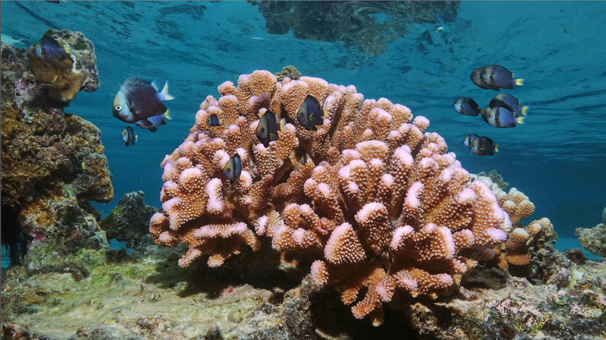
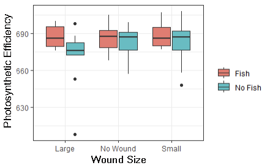
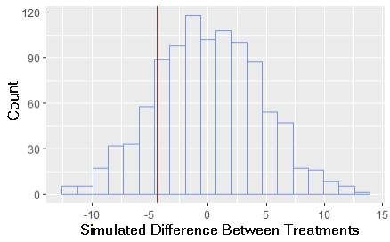
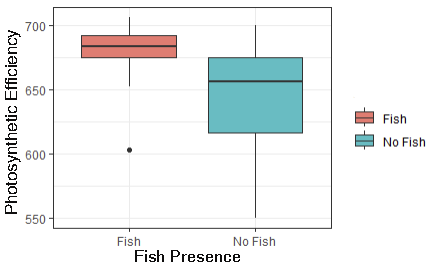
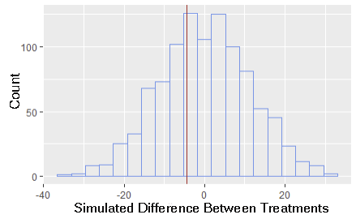

pam_undisturbed_healed <- read_csv("pam_undisturbed_healed.csv")
pam_healed <- read_csv("pam_healed.csv")Fish are Friends: An EDS 240 Analysis
Summary
This document summarizes the data collected in an experiment comparing the effect of wounding intensity (none, small, large) and fish presence (Dascyllus flavicaudus) on a coral’s (Pocillopora sp.) photosynthetic efficiency. Our results show no significant effect of wounding intensity on photosynthetic efficiency among all treatments and datasets. Our results also show a positive, yet not significant, effect of fish presence on the photosynthetic efficiency of healed tissue among high wound intensity treatments only. Under no and small wounding intensities for all data sets the effect of fish on photosynthetic efficiency was negligible.
When drawing conclusions about our data, it’s important to acknowledge that our data suffers from a small sample size. Our experiment contained three intensities of wounding and a binary variable of fish presence, creating six unique combinations of wounding intensity and fish presence. Within each unique combination of treatments n=12. Conclusions about the relationships governing the observed data should be drawn carefully.
Thank you for your time.
Background: Fish are friends!
Some scientists think that your grandchildren may never see a natural coral reef(Hoegh-Guldberg 2019). Corals are in global decline, and climate change is throwing new stressors at our corals faster than they can adapt. One of these new stressors and an emerging source of coral mortality is wounding(Bright 2015). This refers to the mechanical breakdown of coral tissue and skeleton, which can be caused by a variety of sources from a carelessly placed anchor to an abandoned fishing net. Yet, the most devastating and prevalent source of coral wounds is from predators.

Wounds are deadly to corals because they strain a coral’s physiological machinery. Wounds have been shown to decrease a coral’s ability to grow, reproduce, and photosynthesize (Munk 2024).When wounding intensity is high, corals may not have the energy to heal a wound or deal with the strain associated with the damage. Ultimately, this results in an individual’s death. Predation pressure and wounding is only predicted to increase with climate change, resulting in a future where predators may kill entire reefs.
Luckily, corals have some pretty good friends in the fight against climate change and wounding. Fish, particularly those who use corals as shelter, have been shown to alleviate strain on a coral’s physiological machinery(Shantz 2023). Fish have been shown to increase a coral’s ability to grow, reproduce, and photosynthesize.Fish help corals make more energy by providing nutrients through excretion and increasing the waterflow around the coral(Shantz 2023).

Our experiment is interested in elucidating how coral health changes as a function of wounding intensity and fish presence. We studied this relationship in a tank experiment. We collected 72 Pocillopora sp. corals and gave them either no, small, or a large wound. We then spread equal numbers of each wounding treatment into six tanks (12 corals/tank). Thirty grams of the coral sheltering fish, the Yellowtail Dascyllus (Dascyllus flavicaudus) was added to half of these tanks, creating six unique treatments. Corals were housed in treatment tanks for five weeks, and all physiological data was collected at the end.

Analysis
There are two datasets described in this document: photosynthetic efficiency of undisturbed tissue and photosynthetic efficiency of healed tissue. Coral is a colonial organism, thus wounding, however localized, could affect the entire colony’s ability to photosynthesize, as well as the ability of the tissue local to the wound. To account for this potential result, we collected data on both undisturbed (whole colony) tissue and tissue that had regrown over the wound (healed tissue). Our guiding questions were, “Is there a significant difference between photosynthetic efficiency among wounding treatments and fish presence?”
To address our question, we first qualitatively observed the data to inform our later analysis. Then we used randomized hypothesis testing against a null model to form conclusions about the interaction of wounding intensity and fish presence on photosynthetic efficiency. Specifically testing the hypotheses of whether or not there was a difference in photosynthetic efficiency across and among treatments. For treatments that showed a distinct pattern, we created a generalized linear model to characterize the effect.
Fish presence and wounding intensity do not influence photosynthetic efficiency of undisturbed tissue. Undisturbed tissue data shows no discernible difference across treatments
Load in Data
Qualitative visualize data yields no discernible difference among or across treatments
pam_undisturbed_healed %>%
ggplot(aes (x = fish, y = fv_fm, fill = fish)) +
geom_boxplot()+
theme_bw()
## Boxplot of PAM including x = wound and fish = fill
pam_undisturbed_healed %>%
ggplot (aes (x = wound, y = fv_fm, fill = fish))+
geom_boxplot()+
theme_bw()
## Boxplot of PAM including x = fish and fill = wound
pam_undisturbed_healed %>%
ggplot (aes (x = fish, y = fv_fm, fill = wound))+
geom_boxplot()+
theme_bw()
pam_undisturbed_healed %>%
ggplot (aes (x = wound, y = fv_fm, fill = wound))+
geom_boxplot()+
theme_bw()

We fail to reject our null hypothesis at alpha = 0.05
H0: There is no difference in photosynthetic efficiency across and within treatments of healed tissue
HA: There is a difference in photosynthetic efficiency across and within treatments of healed tissue
null_photo_dist <- replicate(1000, {
photo_means <- pam_undisturbed_healed %>%
mutate(wound = sample(wound, n()), #this shuffles the selection of data
fish_presence = sample(fish, n())) %>% #this shuffles the selection of for fish presence
group_by(wound) %>%
summarize(mean = mean(fv_fm))
diff_means <- photo_means$mean[2]-
photo_means$mean[1]
diff_means
})
ggplot(tibble(null_photo_dist), aes(null_photo_dist)) +
geom_histogram(bins = 20,
color = "cornflowerblue",
fill = NA)+
geom_vline(xintercept = diff_means,
color = "firebrick")
p=0.324
sum(abs(null_photo_dist) > abs(diff_means))/
length(null_photo_dist)Fish presence and wounding intensity do not significantly influence photosynthetic efficiency of healed tissue.
Healed tissue data shows no significant difference across treatments. Yet, there is a positive effect of fish on photosynthetic efficiency of corals with large wounds.
Qualitative visualize data shows a potential link between fish presence and increased photosynthetic efficiency
pam_healed %>%
ggplot(aes (x = fish, y = fv_fm, fill = fish)) +
geom_boxplot()+
theme_bw()
pam_healed %>%
ggplot(aes (x = fish, y = fv_fm, fill = wound)) +
geom_boxplot()+
theme_bw()
pam_healed %>%
ggplot(aes (x = wound, y = fv_fm, fill = wound)) +
geom_boxplot()+
theme_bw()
pam_healed %>%
ggplot(aes (x = wound, y = fv_fm, fill = fish)) +
geom_boxplot()+
theme_bw()

We fail to reject our null hypothesis at alpha = 0.05
H0: There is no difference in photosynthetic efficiency across and within treatments of healed tissue
HA: There is a difference in photosynthetic efficiency across and within treatments of healed tissue
null_dist_healed <- replicate(1000, {
photo_means_healed <- pam_healed %>%
mutate(wound = sample(wound, n()), #this shuffles the selection of data
fish_presence = sample(fish, n())) %>% #this shuffles the selection of for fish presence
group_by(wound) %>%
summarize(mean = mean(fv_fm))
diff_means_healed <- photo_means_healed$mean[2]-
photo_means_healed$mean[1]
diff_means_healed
})
ggplot(tibble(null_dist_healed), aes(null_dist_healed)) +
geom_histogram(bins = 20,
color = "cornflowerblue",
fill = NA)+
geom_vline(xintercept = diff_means,
color = "firebrick")
p=0.473
sum(abs(null_dist_healed) > abs(diff_means_healed))/
length(null_dist_healed)Generalized linear model suggests fish have a positive effect on the photosynthetic efficiency of corals with large wounds
large_linear <- glm(fv_fm ~ fish, family = poisson, data = large)
summary(large_linear)Conclusion
Our data yielded no significant difference between any treatment groups for neither undisturbed tissue nor healed tissue. This suggests that fish and wounding has no significant effect on coral health, but I doubt that this is true. Our experiment stood upon a base of literature that suggested both should have an effect on coral health, so it’s unlikely that our results are representative of physiological dynamics.
Our experiment could be suffering from a small sample size. Each of the six unique treatments had n=12, but if done again, I would increase the sample size to capture a more holistic breadth of variability. We observed a positive, yet not significant effect of fish on photosynthetic efficiency within large wounds. Increasing our sample size could also increase the clarity of this relationship.
The results, although not significant, suggest that fish have an effect on coral health during high stress events. This supports the theory that some systems have a stress gradient that governs the magnitude of benefits provided by positive interactions, like the ones fish provide to corals. In such systems, resilience is conferred by positive interactions, which means that there is still hope for our reefs. There’s also still much work to be done, and these data suggest that disentangling the links between coral resilience and the biodiversity of organisms on and around the reef may bring new insights into the future of our reefs.

Bibliography
Bright, A. J., Cameron, C. M., & Miller, M. W. (2015). Enhanced susceptibility to predation in corals of compromised condition. PeerJ, 3, e1239.
Hoegh-Guldberg, O., Pendleton, L., & Kaup, A. (2019). People and the changing nature of coral reefs. Regional Studies in Marine Science, 30, 100699.
Munk, N. J. (2024). Host and Symbiont Physiology During Wound Regeneration in Acropora pulchra Under Warming Conditions (Master’s thesis, University of California, Santa Barbara).
Shantz, A. A., Ladd, M. C., Ezzat, L., Schmitt, R. J., Holbrook, S. J., Schmeltzer, E., … & Burkepile, D. E. (2023). Positive interactions between corals and damselfish increase coral resistance to temperature stress. Global Change Biology, 29(2), 417-431.